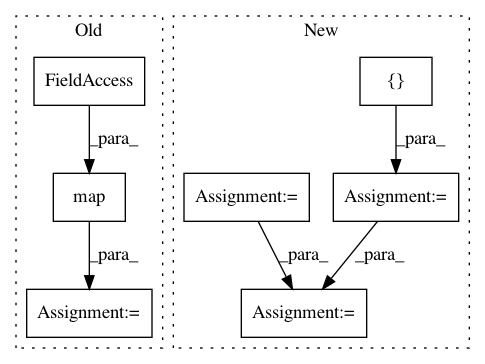

35364f3d1dc129e68d8f5da1cf1d090073e4b556,unittests.py,TestGeomstatsMethods,test_rigid_transformations_riemannian_exp_log,#TestGeomstatsMethods#,163
Before Change
np.array([6 * 1e-8, 5.5 * 1e-7, -2 * 1e-6]))
xs = [x1, x2, x3, x4]
rs = map(rotations.regularize_rotation_vector, [r1, r2, r3, r4])
for (x, r) in zip(xs, rs):
(u, a) = rigid_transformations.riemannian_log(x_ref, r_ref, x, r)
(x_result, r_result) = rigid_transformations.riemannian_exp(
x_ref, r_ref, u, a)
(x_expected, r_expected) = (x, r)
self.assertTrue(np.allclose(x_result, x_expected))
self.assertTrue(np.allclose(r_result, r_expected))
if __name__ == "__main__":
unittest.main()
After Change
translation_2 = np.array([4, 0, 0])
rot_vec_2 = np.pi / (2 * np.sqrt(3)) * np.array([1, 0, 0])
transfo_2 = np.concatenate([rot_vec_2, translation_2])
translation_3 = np.array([1.2, -3.6, 50])
rot_vec_3 = np.pi / (2 * np.sqrt(3)) * np.array([1, -20, 50])
transfo_3 = np.concatenate([rot_vec_3, translation_3])
translation_4 = np.array([4, 10, -2])
rot_vec_4 = (np.pi / (2 * np.sqrt(3)) *
np.array([6 * 1e-8, 5.5 * 1e-7, -2 * 1e-6]))
transfo_4 = np.concatenate([rot_vec_4, translation_4])
all_transfos = [transfo_1, transfo_2, transfo_3, transfo_4]
for transfo in all_transfos:
riem_log = rigid_transformations.riemannian_log(
transfo,
In pattern: SUPERPATTERN
Frequency: 3
Non-data size: 7
Instances
Project Name: geomstats/geomstats
Commit Name: 35364f3d1dc129e68d8f5da1cf1d090073e4b556
Time: 2017-10-25
Author: ninamio78@gmail.com
File Name: unittests.py
Class Name: TestGeomstatsMethods
Method Name: test_rigid_transformations_riemannian_exp_log
Project Name: geomstats/geomstats
Commit Name: 35364f3d1dc129e68d8f5da1cf1d090073e4b556
Time: 2017-10-25
Author: ninamio78@gmail.com
File Name: unittests.py
Class Name: TestGeomstatsMethods
Method Name: test_rigid_transformations_group_exp_log
Project Name: tensorflow/models
Commit Name: f7b4c6de2037ebedf6bc8ea5979e81666d54534f
Time: 2020-12-01
Author: rathodv@google.com
File Name: research/object_detection/meta_architectures/center_net_meta_arch.py
Class Name:
Method Name: convert_strided_predictions_to_normalized_boxes